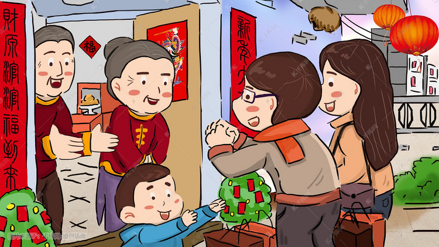

During the Spring Festival, we will reunite with relatives who we haven't seen for a long time, and we can also talk about the past year together to share happiness and joy, We comfort and encourage each other, but happy times are always short, and we will always usher in the last day of the Spring Festival holiday. Finally, we will send blessings to each other this year. May the New Year bring many good things and rich blessings to you and all those you love! I would like to wish you a joyous new year and express my hope for your happiness and good future. Also At New Year and always, may peace and love fill your heart, beauty fill your world, and contentment and joy fill your days. I wish the teacher a happy new year!
|  |